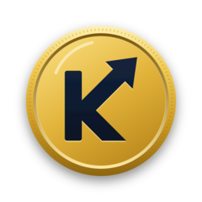

Destek
Altın, döviz, hisse, kripto ve alacaklarınızı tek ekranda takip edin; enflasyona göre gerçek getirinizi görün.
Sık sorulan sorular
Altın fiyatı neden kuyumcudakinden farklı?
Kıymet, ons altın fiyatı ve dolar kurundan hesaplanan teorik "has" değeri gösterir. Kuyumcu alış/satış fiyatlarına işçilik ve makas eklenir.
Reel getiri nasıl hesaplanıyor?
Bugünkü değer, alış maliyetinizin TÜFE'ye göre bugüne taşınmış haliyle karşılaştırılır: Değer ÷ (Maliyet × TÜFE bugün ÷ TÜFE alış ayı) − 1.
Verilerim nerede saklanıyor?
Yalnızca telefonunuzda. Üyelik yoktur, hiçbir sunucuya gönderilmez. Ayrıntılar için Gizlilik Politikası.
Fiyatlar gerçek zamanlı mı?
Kripto ve altın birkaç saniyede bir güncellenir. Döviz TCMB gösterge kurudur. Hisse fiyatları en az 15 dakika gecikmelidir.